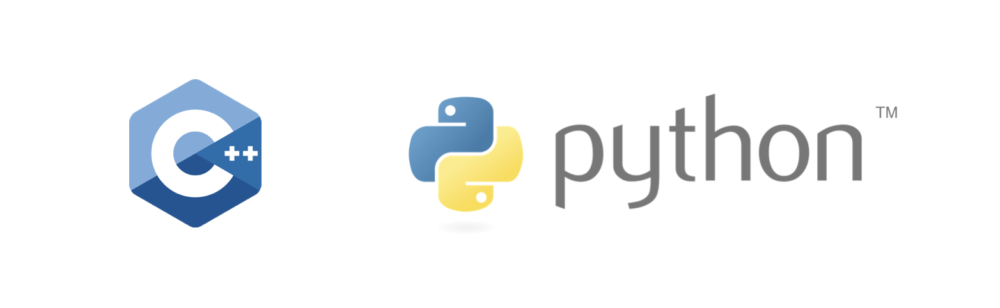
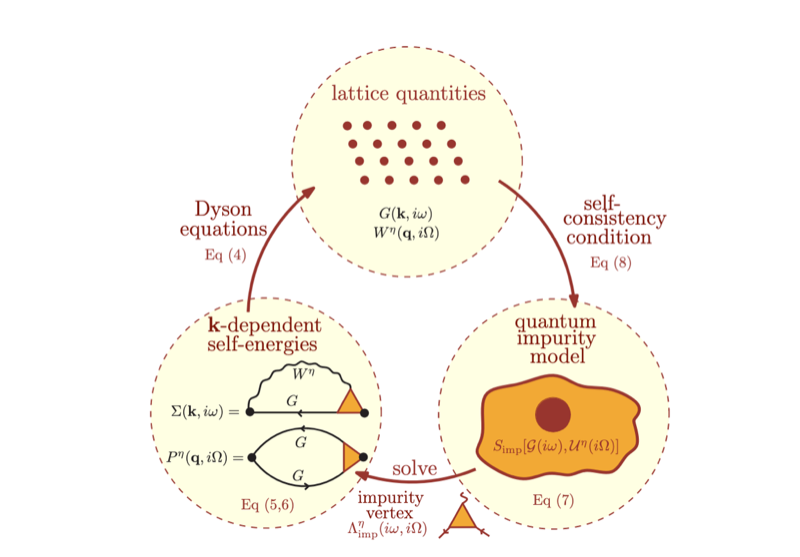
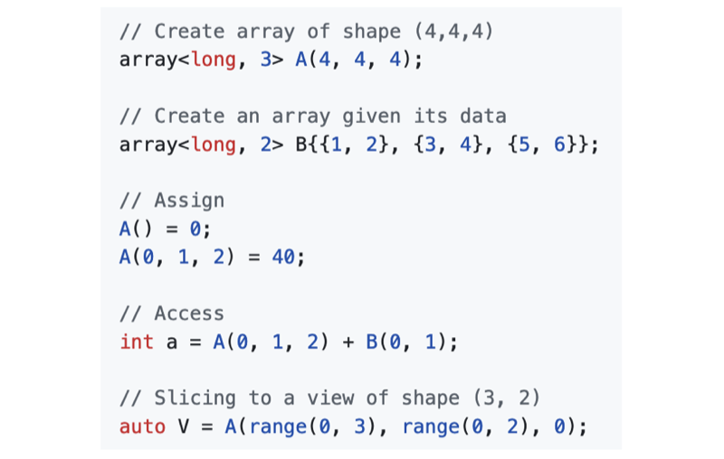
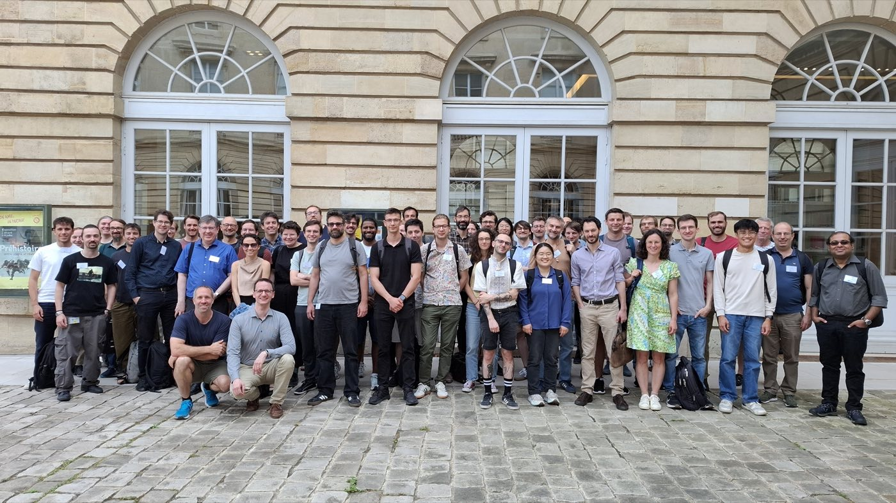
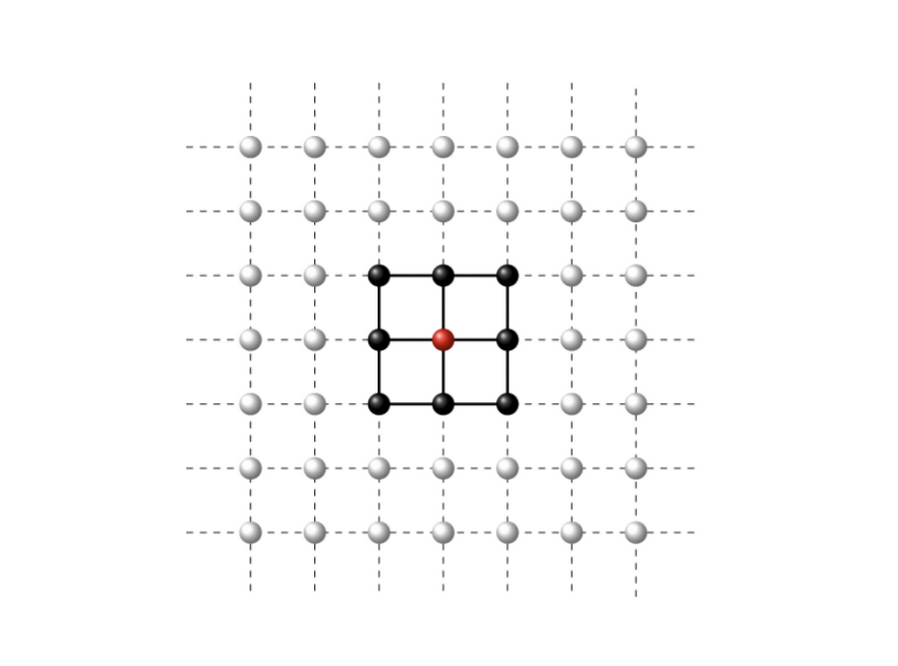
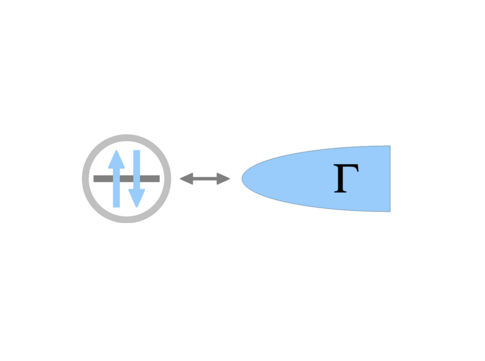
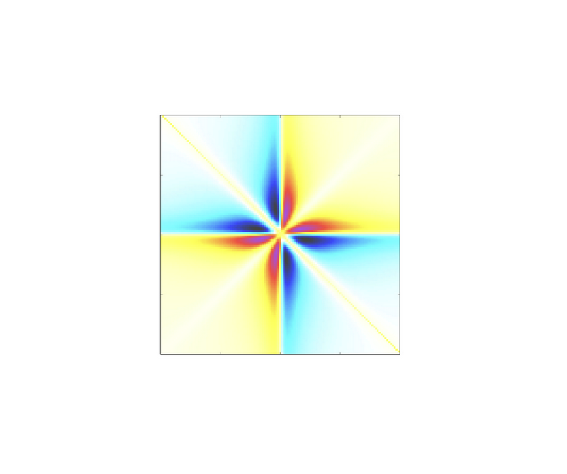
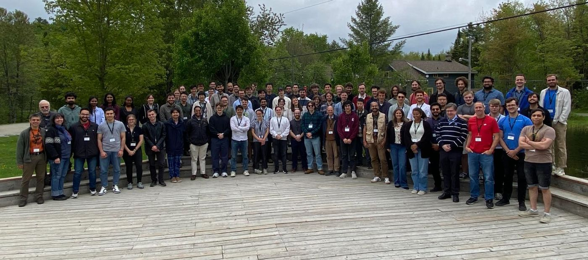
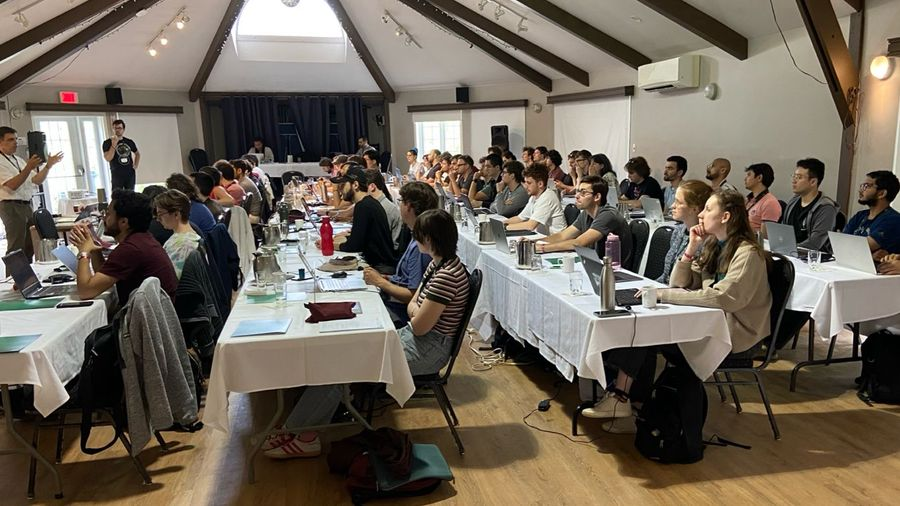
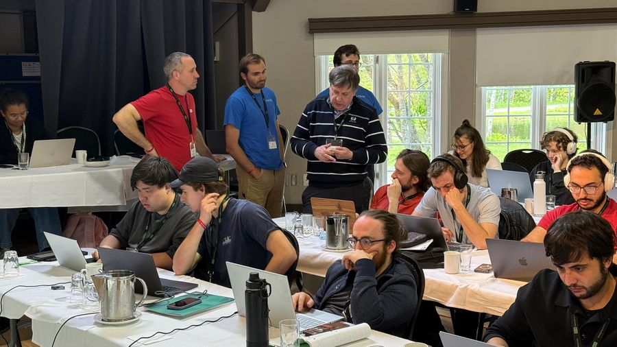

Nearly all of my work is open source, written in modern C++ with first-class Python interfaces. Below is a selection of the projects I develop and maintain.
Nils Wentzell, Ph.D.
I am a Research Scientist at the Center for Computational Quantum Physics (CCQ), part of the Flatiron Institute. I write software libraries for scientific computing in modern C++ and Python, pairing intuitive, composable APIs with high performance.
The heart of my work is TRIQS, an open-source software stack I lead, used by research groups around the world to study interacting quantum systems. Thanks to its C++ and Python libraries, the TRIQS team and its community have developed and implemented a variety of quantum many-body algorithms, ranging from quantum impurity solvers to embedding schemes for interacting lattice models.
I joined the TRIQS core team at CEA Saclay in 2016, and started my role at the Flatiron Institute two years later. Before that I obtained my M.Sc. in physics at RWTH Aachen University and my Ph.D. from the University of Tübingen.
Software

TRIQS — Library and Software Stack
I lead the development of the TRIQS open-source library, a Toolbox for Research on Interacting Quantum Systems. It provides the building blocks, from Green functions to Monte Carlo tools, behind more than 25 domain applications used by research groups worldwide. Its founding papers have collected 900+ citations to date, and its annual community meetings bring together over a hundred participants, in person and remotely.
TRIQS Applications
TRIQS applications assemble the library's building blocks into complete many-body algorithms, from quantum impurity solvers such as CT-INT through embedding methods like TRILEX to interfaces that connect TRIQS with electronic-structure and other community codes. The applications are where our stack meets everyday research, and where most results are produced.

TRILEX Self-Consistency Loop
nda — N-dimensional Array Library
nda, the C++23 library for N-dimensional arrays that I lead, is an essential building block of TRIQS and is used well beyond it at the Flatiron Institute. It offers lazy expressions, lightweight views, and HDF5, MPI, and BLAS/LAPACK support, with GPU acceleration via library backends to cuBLAS, cuSOLVER, cuTENSOR, and MAGMA.

Core Libraries & Tools
Not all of my work stays inside TRIQS. Underneath the stack sit h5, mpi, and itertools, compact C++ libraries covering HDF5 file I/O, MPI communication, and range utilities. They carry no dependency on TRIQS and can be used on their own. The C++/Python bindings come from clair and c2py, developed with colleagues as the successor to cpp2py; TRIQS 4.0 ported the entire ecosystem to them.

TRIQS Community Meeting, Paris, July 2026
Research
Quantum Embedding
Quantum embedding methods such as Dynamical Mean-Field Theory (DMFT) describe a solid in terms of an atom embedded in its electronic environment, and have led to major advances in our understanding of strongly correlated materials. I work on extensions of DMFT that capture non-local correlations, from cluster methods to vertex-based embedding schemes such as TRILEX and eMBEX.

Impurity Solvers
In quantum impurity models, a few atomic degrees of freedom interact with a reservoir of electrons. Solving them numerically is hard, and often the computational bottleneck of embedding methods like DMFT. I work on algorithms and implementations of quantum impurity solvers, ranging from continuous-time quantum Monte Carlo to exact diagonalization and tensor networks.

Vertex Functions
Vertex functions encode the effective interactions between particles in many-body systems. Their size and computational cost make them numerically challenging, yet they are often crucial for describing properties such as high-temperature superconductivity. My work here spans their compact representation, efficient computation, and use in diagrammatic methods and response-function calculations.

Selected Papers
-
Tracking the Footprints of Spin Fluctuations: A Multi-Method, Multi-Messenger Study of the Two-Dimensional Hubbard Model
T. Schäfer, N. Wentzell, F. Šimkovic IV, Y.-Y. He, C. Hille, M. Klett, C. J. Eckhardt, B. Arzhang, V. Harkov, F.-M. Le Régent, A. Kirsch, Y. Wang, A. J. Kim, E. Kozik, E. A. Stepanov, A. Kauch, S. Andergassen, P. Hansmann, D. Rohe, Y. M. Vilk, J. P. F. LeBlanc, S. Zhang, A.-M. S. Tremblay, M. Ferrero, O. Parcollet, and A. Georges
Phys. Rev. X 11, 011058 (2021) -
Linear resistivity and Sachdev-Ye-Kitaev (SYK) spin liquid behavior in a quantum critical metal with spin-1/2 fermions
P. Cha, N. Wentzell, O. Parcollet, A. Georges, and E.-A. Kim
Proc. Natl. Acad. Sci. U.S.A. 117, 18341 (2020) -
Distinct spin and orbital dynamics in Sr2RuO4
H. Suzuki, L. Wang, J. Bertinshaw, H. U. R. Strand, S. Käser, M. Krautloher, Z. Yang, N. Wentzell, O. Parcollet, F. Jerzembeck, N. Kikugawa, A. P. Mackenzie, A. Georges, P. Hansmann, H. Gretarsson, and B. Keimer
Nat. Commun. 14, 7042 (2023) -
High-frequency asymptotics of the vertex function: Diagrammatic parametrization and algorithmic implementation
N. Wentzell, G. Li, A. Tagliavini, C. Taranto, G. Rohringer, K. Held, A. Toschi, and S. Andergassen
Phys. Rev. B 102, 085106 (2020) -
Conductivity in the square lattice Hubbard model at high temperatures: importance of vertex corrections
J. Vučičević, J. Kokalj, R. Žitko, N. Wentzell, D. Tanasković, and J. Mravlje
Phys. Rev. Lett. 123, 036601 (2019)
23 journal articles (PRX, PNAS, Nat. Commun., PRL, PRB, Phys. Rev. Research, Comput. Phys. Commun., J. Open Source Softw., SciPost Phys. Codebases) · 1,200+ citations · h-index 15 (Google Scholar, August 2026)
Teaching & Mentoring
I founded the TRIQS Summer School (2023, 2025; 50+ students). I have taught TRIQS tutorials at the International Summer School on Computational Quantum Materials in Sherbrooke since 2018, as well as at the Simons Many-Electron Summer School at Stony Brook and the Arnold Sommerfeld School.
At the Flatiron Institute I supervise Research Fellows, from their day-to-day technical work through to career advice, and I advise colleagues on many aspects of scientific software development in modern C++. I previously co-organized the institute-wide Sciware seminars, and lately I have been leading a working group on how agentic coding tools fit into research software. You may also run into me at CppCon.



International Summer School on Computational Quantum Materials, Sherbrooke, 2026